1
Enhance
Upscale the input and apply CLAHE, gamma correction, histogram equalization, denoising, or no enhancement.
Static GitHub Pages report for all five sample documents. Each tab shows the default CLAHE contour run, the best-scoring comparison run, generated stage artifacts, and the full enhancement/detection matrix.
The comparison is a deterministic grid search over existing local pipeline options; it does not train or tune new model weights.
For each sample, the runner evaluates 5 enhancement choices: CLAHE, gamma correction, histogram equalization, denoising, and no enhancement. Each is paired with 4 detection choices: contour, Hough, edge analysis, and auto fallback.
Every successful run returns blur, contrast, brightness, sharpness, and text-coverage metrics. The report selects the run with the highest computed quality score. Failed document detections are marked as failures and cannot be selected.
The same processing stages are used for every tab; only enhancement and detection strategy vary in the comparison run.
Upscale the input and apply CLAHE, gamma correction, histogram equalization, denoising, or no enhancement.
Blur the enhanced image, compute median-based Canny thresholds, and dilate edges to strengthen document boundaries.
Try contour, Hough, or edge-analysis detection, order four corners, and warp the document to a rectangular scan.
Convert the corrected scan to grayscale and run adaptive Gaussian thresholding with block size 11 and C value 7.
Apply close, open, and final close morphology with a 3x3 elliptical kernel to fill gaps and remove isolated noise.
Score blur, contrast, brightness range, sharpness, and text coverage to produce a pass, warning, or fail grade.
Best run: hist_eq+auto, detection used: contour, score: 90.0%.

| Combination | Status | Score | Grade | Detection Requested |
|---|---|---|---|---|
| clahe+auto | OK | 70.0% | PASS (with warnings) | auto |
| clahe+contour | OK | 70.0% | PASS (with warnings) | contour |
| clahe+edge | OK | 70.0% | PASS (with warnings) | edge |
| clahe+hough | OK | 70.0% | PASS (with warnings) | hough |
| denoise+auto | OK | 55.0% | PASS (with warnings) | auto |
| denoise+contour | OK | 55.0% | PASS (with warnings) | contour |
| denoise+edge | OK | 55.0% | PASS (with warnings) | edge |
| denoise+hough | OK | 55.0% | PASS (with warnings) | hough |
| gamma+auto | OK | 55.0% | PASS (with warnings) | auto |
| gamma+contour | OK | 55.0% | PASS (with warnings) | contour |
| gamma+edge | OK | 55.0% | PASS (with warnings) | edge |
| gamma+hough | OK | 55.0% | PASS (with warnings) | hough |
| hist_eq+auto | OK | 90.0% | PASS | auto |
| hist_eq+contour | OK | 90.0% | PASS | contour |
| hist_eq+edge | OK | 90.0% | PASS | edge |
| hist_eq+hough | OK | 90.0% | PASS | hough |
| none+auto | OK | 55.0% | PASS (with warnings) | auto |
| none+contour | OK | 55.0% | PASS (with warnings) | contour |
| none+edge | OK | 55.0% | PASS (with warnings) | edge |
| none+hough | OK | 55.0% | PASS (with warnings) | hough |
Best run: clahe+auto, detection used: contour, score: 55.0%.
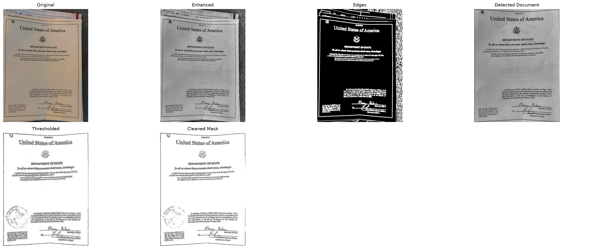

| Combination | Status | Score | Grade | Detection Requested |
|---|---|---|---|---|
| clahe+auto | OK | 55.0% | PASS (with warnings) | auto |
| clahe+contour | OK | 55.0% | PASS (with warnings) | contour |
| clahe+edge | OK | 55.0% | PASS (with warnings) | edge |
| clahe+hough | OK | 55.0% | PASS (with warnings) | hough |
| denoise+auto | OK | 40.0% | FAIL | auto |
| denoise+contour | OK | 40.0% | FAIL | contour |
| denoise+edge | OK | 40.0% | FAIL | edge |
| denoise+hough | OK | 40.0% | FAIL | hough |
| gamma+auto | OK | 55.0% | PASS (with warnings) | auto |
| gamma+contour | OK | 55.0% | PASS (with warnings) | contour |
| gamma+edge | OK | 55.0% | PASS (with warnings) | edge |
| gamma+hough | OK | 55.0% | PASS (with warnings) | hough |
| hist_eq+auto | OK | 30.0% | FAIL | auto |
| hist_eq+contour | FAIL | N/A | FAIL | contour |
| hist_eq+edge | FAIL | N/A | FAIL | edge |
| hist_eq+hough | OK | 30.0% | FAIL | hough |
| none+auto | OK | 55.0% | PASS (with warnings) | auto |
| none+contour | OK | 55.0% | PASS (with warnings) | contour |
| none+edge | OK | 55.0% | PASS (with warnings) | edge |
| none+hough | OK | 55.0% | PASS (with warnings) | hough |
Best run: clahe+auto, detection used: contour, score: 65.0%.

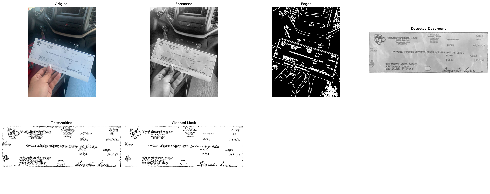
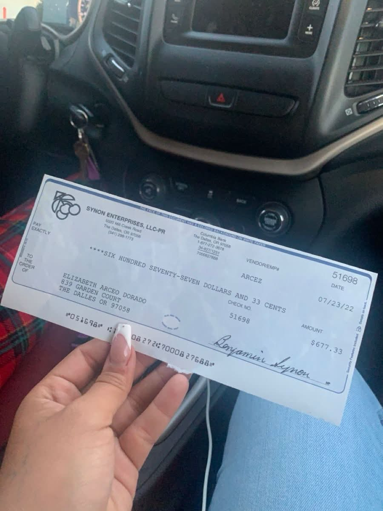

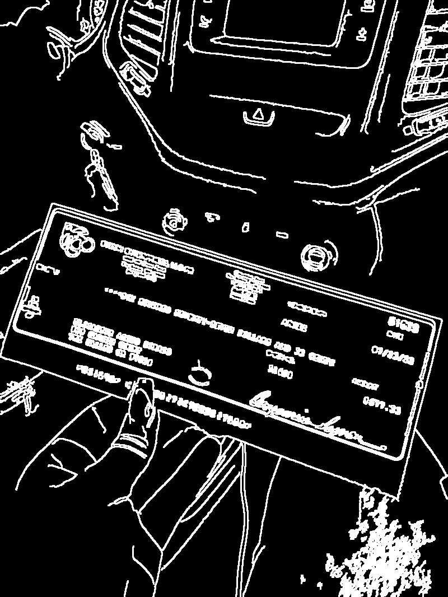
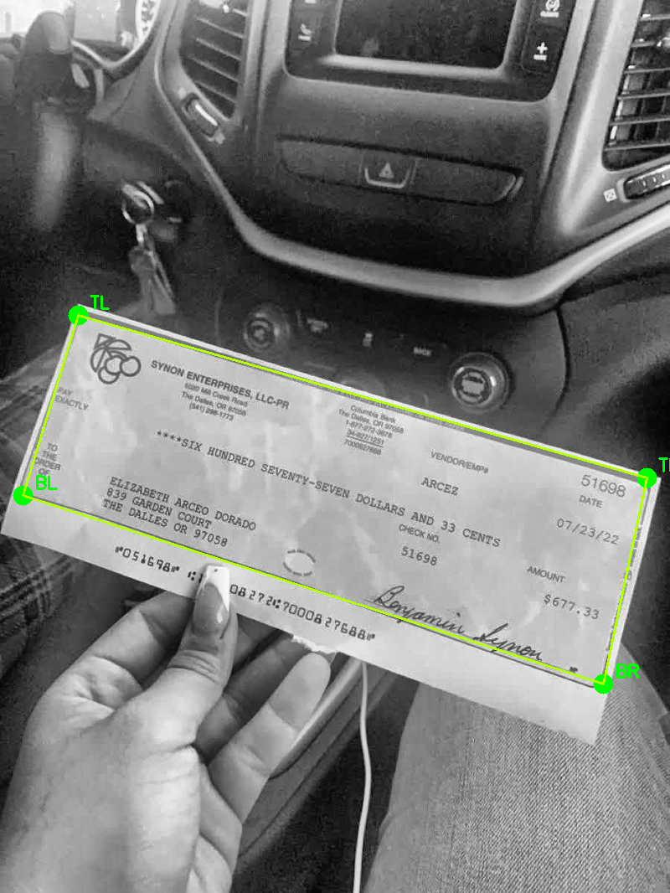
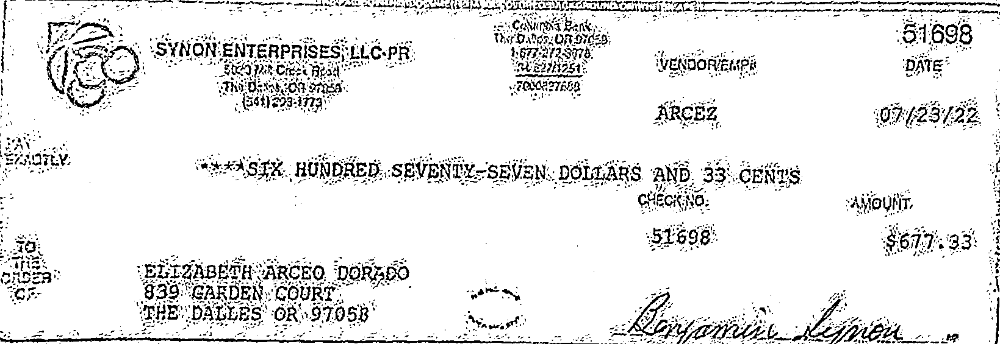
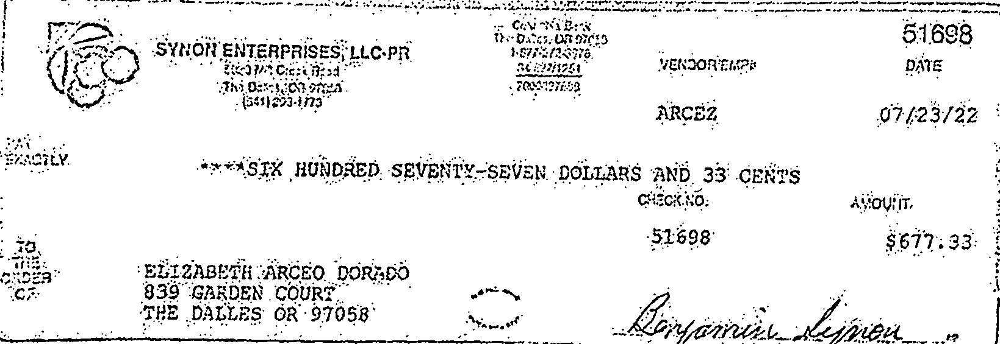
| Combination | Status | Score | Grade | Detection Requested |
|---|---|---|---|---|
| clahe+auto | OK | 65.0% | PASS (with warnings) | auto |
| clahe+contour | OK | 65.0% | PASS (with warnings) | contour |
| clahe+edge | FAIL | N/A | FAIL | edge |
| clahe+hough | OK | 65.0% | PASS (with warnings) | hough |
| denoise+auto | FAIL | N/A | FAIL | auto |
| denoise+contour | FAIL | N/A | FAIL | contour |
| denoise+edge | FAIL | N/A | FAIL | edge |
| denoise+hough | FAIL | N/A | FAIL | hough |
| gamma+auto | FAIL | N/A | FAIL | auto |
| gamma+contour | FAIL | N/A | FAIL | contour |
| gamma+edge | FAIL | N/A | FAIL | edge |
| gamma+hough | FAIL | N/A | FAIL | hough |
| hist_eq+auto | OK | 45.0% | FAIL | auto |
| hist_eq+contour | FAIL | N/A | FAIL | contour |
| hist_eq+edge | FAIL | N/A | FAIL | edge |
| hist_eq+hough | OK | 45.0% | FAIL | hough |
| none+auto | FAIL | N/A | FAIL | auto |
| none+contour | FAIL | N/A | FAIL | contour |
| none+edge | FAIL | N/A | FAIL | edge |
| none+hough | FAIL | N/A | FAIL | hough |
Best run: clahe+auto, detection used: contour, score: 90.0%.

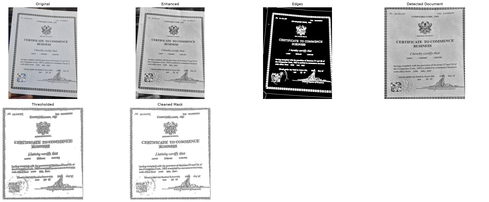
| Combination | Status | Score | Grade | Detection Requested |
|---|---|---|---|---|
| clahe+auto | OK | 90.0% | PASS | auto |
| clahe+contour | OK | 90.0% | PASS | contour |
| clahe+edge | OK | 90.0% | PASS | edge |
| clahe+hough | OK | 90.0% | PASS | hough |
| denoise+auto | OK | 90.0% | PASS | auto |
| denoise+contour | OK | 90.0% | PASS | contour |
| denoise+edge | OK | 90.0% | PASS | edge |
| denoise+hough | FAIL | N/A | FAIL | hough |
| gamma+auto | OK | 90.0% | PASS | auto |
| gamma+contour | OK | 90.0% | PASS | contour |
| gamma+edge | OK | 90.0% | PASS | edge |
| gamma+hough | OK | 90.0% | PASS | hough |
| hist_eq+auto | OK | 90.0% | PASS | auto |
| hist_eq+contour | OK | 90.0% | PASS | contour |
| hist_eq+edge | FAIL | N/A | FAIL | edge |
| hist_eq+hough | OK | 90.0% | PASS | hough |
| none+auto | OK | 90.0% | PASS | auto |
| none+contour | OK | 90.0% | PASS | contour |
| none+edge | OK | 90.0% | PASS | edge |
| none+hough | OK | 30.0% | FAIL | hough |
Best run: clahe+edge, detection used: edge, score: 55.0%.
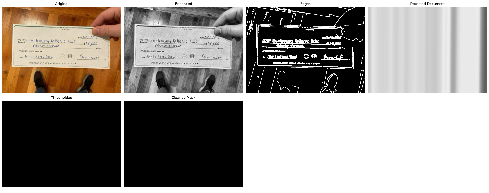
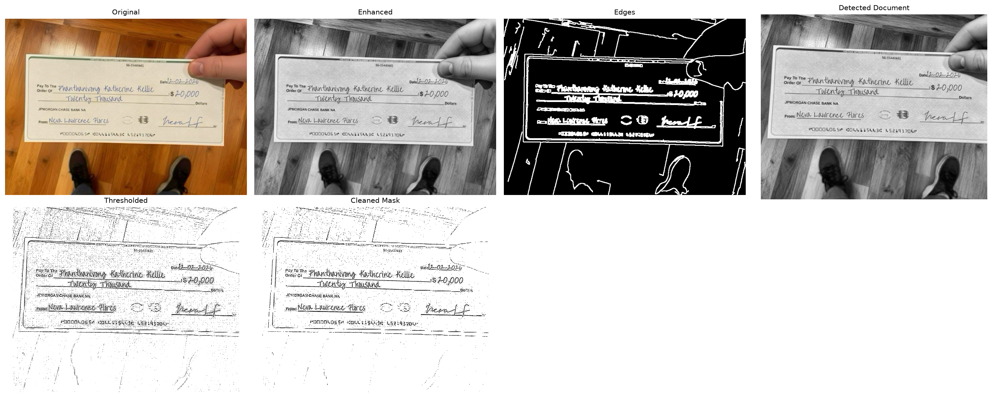
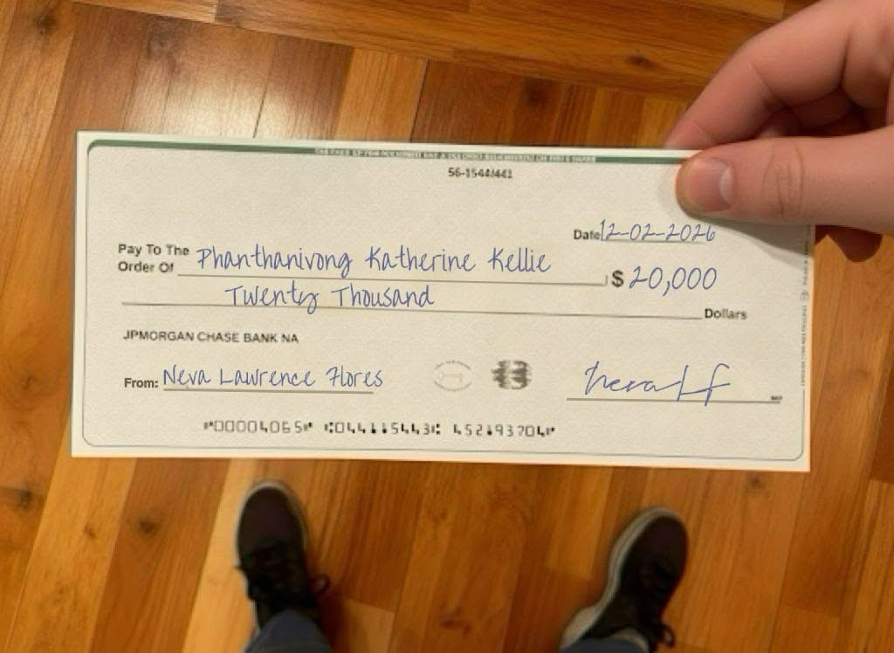
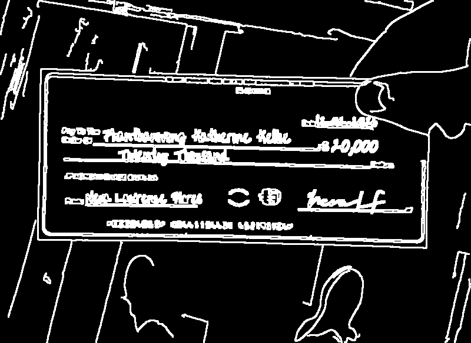
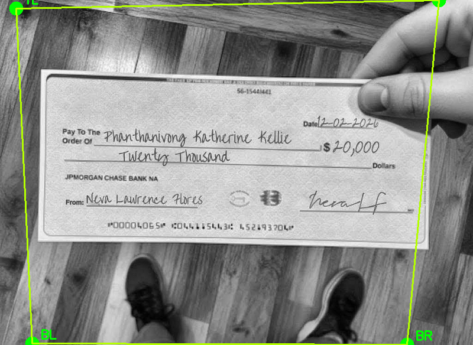
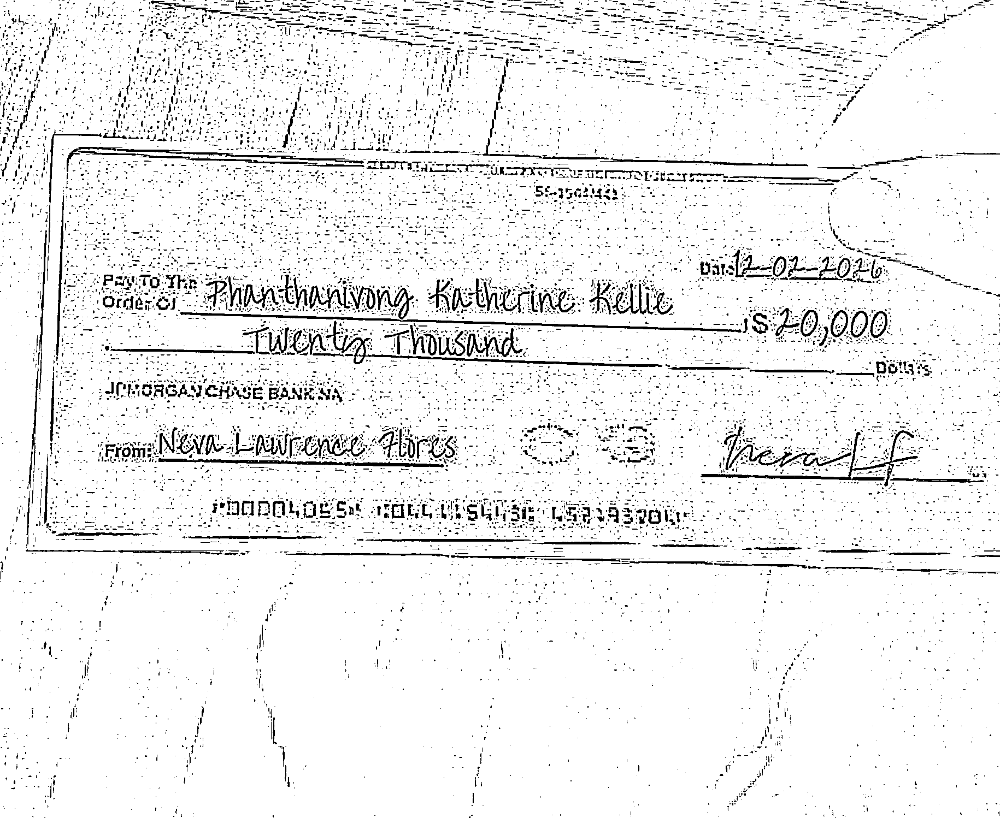
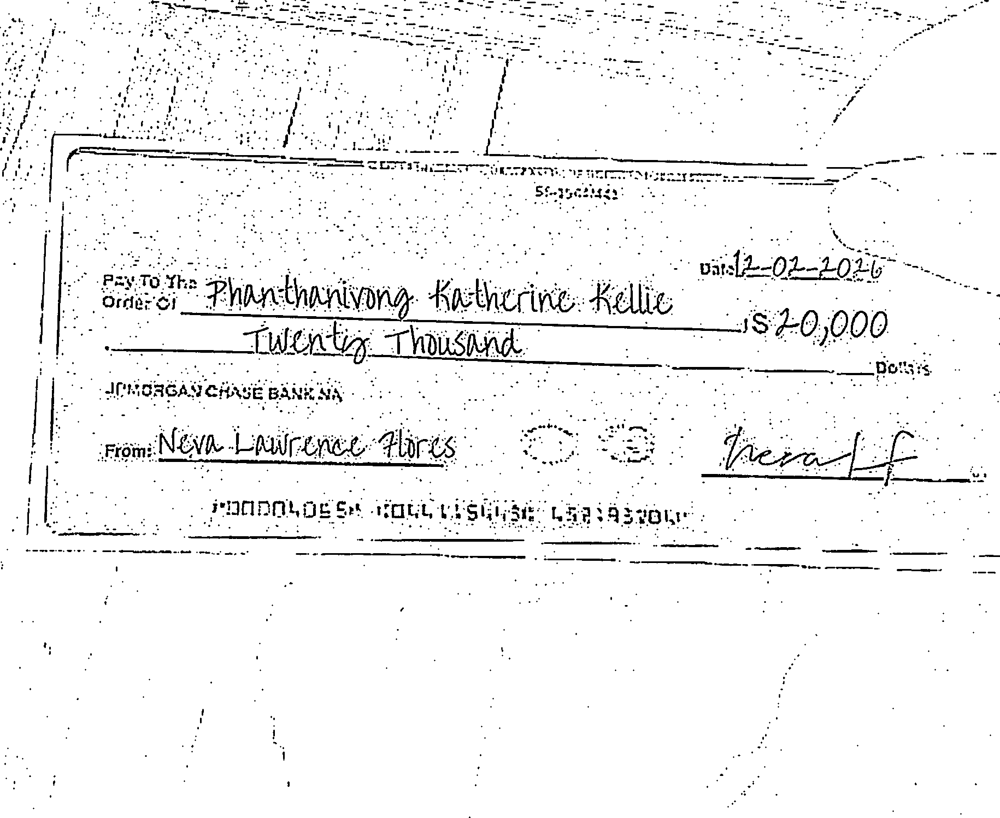
| Combination | Status | Score | Grade | Detection Requested |
|---|---|---|---|---|
| clahe+auto | OK | 40.0% | FAIL | auto |
| clahe+contour | OK | 40.0% | FAIL | contour |
| clahe+edge | OK | 55.0% | PASS (with warnings) | edge |
| clahe+hough | FAIL | N/A | FAIL | hough |
| denoise+auto | OK | 30.0% | FAIL | auto |
| denoise+contour | FAIL | N/A | FAIL | contour |
| denoise+edge | OK | 30.0% | FAIL | edge |
| denoise+hough | FAIL | N/A | FAIL | hough |
| gamma+auto | OK | 30.0% | FAIL | auto |
| gamma+contour | FAIL | N/A | FAIL | contour |
| gamma+edge | OK | 30.0% | FAIL | edge |
| gamma+hough | FAIL | N/A | FAIL | hough |
| hist_eq+auto | OK | 40.0% | FAIL | auto |
| hist_eq+contour | FAIL | N/A | FAIL | contour |
| hist_eq+edge | FAIL | N/A | FAIL | edge |
| hist_eq+hough | OK | 40.0% | FAIL | hough |
| none+auto | OK | 40.0% | FAIL | auto |
| none+contour | OK | 40.0% | FAIL | contour |
| none+edge | FAIL | N/A | FAIL | edge |
| none+hough | FAIL | N/A | FAIL | hough |
All commands used the existing local virtual environment.
.venv/bin/python src/main.py samples/doc_N.jpg --summary --output output/doc_N_default
.venv/bin/python src/main.py samples/doc_N.jpg --compare --output output/doc_N_comparison